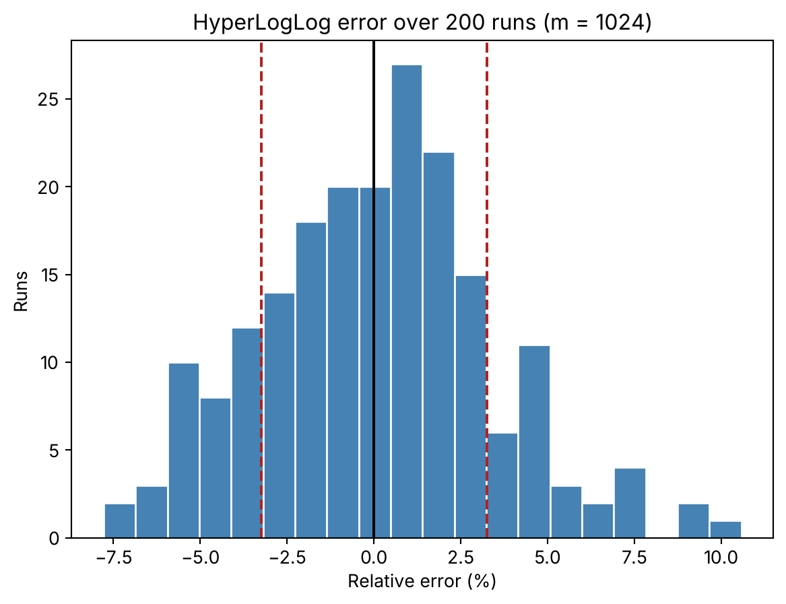

import sys
import numpy as np
import matplotlib.pyplot as pltCounting a million distinct users in about a kilobyte
simulation
performance
python
You can count distinct elements without storing them. Hash each one and remember only the longest run of leading zeros per bucket. With 1,024 registers the error is about 3%.
I flip a coin until it lands tails, and I count the heads before that. I play the game many times and don’t tell you how many. I only tell you the longest run of heads: five.
How many games did I play? Probably dozens, not three. Five heads in a row is rare, so I must have tried quite a few times.
That intuition is the whole algorithm.
The coin, with numbers
Let me check how far the intuition goes. I play the game 10 times, then 100, then up to 100,000, and write down the longest run of heads each time.
rng = np.random.default_rng(1)
for games in (10, 100, 1_000, 10_000, 100_000):
flips = rng.random((games, 64)) < 0.5 # heads = True
run = np.argmin(flips, axis=1) # heads before the first tails
print(f"{games:>7} games -> longest run of heads: {run.max()} log2(games) = {np.log2(games):.1f}") 10 games -> longest run of heads: 5 log2(games) = 3.3
100 games -> longest run of heads: 5 log2(games) = 6.6
1000 games -> longest run of heads: 11 log2(games) = 10.0
10000 games -> longest run of heads: 11 log2(games) = 13.3
100000 games -> longest run of heads: 18 log2(games) = 16.6The longest run grows roughly like \(\log_2\) of the number of games. A run of at least \(k\) heads happens with probability \(2^{-k}\), so you need about \(2^k\) games to see one.
Roughly. Ten games and a hundred games gave the same answer, 5, and a hundred thousand gave 18 where the logarithm says 16.6. One run of heads is a noisy witness.
From coins to users
Now swap the coin for a hash. Take a user id, push it through a good 64-bit hash function, and look at the bits. They behave like fair coin flips. Count the zeros at the start, and you have a game.
The same id always hashes to the same bits. Seeing an id twice is the same game played twice, and it cannot make the longest run any longer. Duplicates are free.
So the longest run of leading zeros tells you roughly how many distinct ids went by. You don’t keep the ids. You keep one number.
One number is too noisy, as the coins showed. The fix is to split the ids into buckets. The first 10 bits of the hash pick one of \(m = 1024\) buckets. The remaining 54 bits play the coin game inside that bucket, and the bucket stores the longest run it has seen.
Now you have 1,024 noisy witnesses. You combine them with a harmonic mean, which keeps a single lucky bucket from dragging the estimate up. The constants of that formula come from the paper and I won’t derive them here.1
The whole thing, in numpy
The hash first. Python’s own hash() changes between runs for strings and is a poor mixer for integers, so I use a vectorised splitmix64 finaliser.
P = 10 # bits used to pick a register
M = 1 << P # 1024 registers
W = 64 - P # 54 bits left to look for the first 1
def splitmix64(x, seed=0):
# Vectorised splitmix64 finaliser on uint64 arrays (wraps around on overflow)
gamma = (0x9E3779B97F4A7C15 * (seed + 1)) % 2**64 # plain Python ints: no overflow
z = x + np.uint64(gamma)
z = (z ^ (z >> np.uint64(30))) * np.uint64(0xBF58476D1CE4E5B9)
z = (z ^ (z >> np.uint64(27))) * np.uint64(0x94D049BB133111EB)
return z ^ (z >> np.uint64(31))
def leading_zeros(v, bits):
# Leading zeros of v seen as a `bits`-bit number, by binary search (no float rounding)
v = v.copy()
n = np.zeros(v.shape, dtype=np.int64)
for s in (32, 16, 8, 4, 2, 1):
small = v < (np.uint64(1) << np.uint64(bits - s))
n += np.where(small, s, 0)
v = np.where(small, v << np.uint64(s), v)
v = v & ((np.uint64(1) << np.uint64(bits)) - np.uint64(1))
return np.where(v == 0, bits, n)Then the sketch. Each register keeps the maximum position of the first 1 seen in its bucket. The estimator is the harmonic mean from before. On top of it goes the paper’s small-count correction. It only matters when many registers are still empty.
def build_registers(ids, seed=0):
h = splitmix64(ids.astype(np.uint64), seed)
idx = (h >> np.uint64(W)).astype(np.int64) # top 10 bits -> register
rest = h & ((np.uint64(1) << np.uint64(W)) - np.uint64(1)) # remaining 54 bits
rho = (leading_zeros(rest, W) + 1).astype(np.uint8) # position of the first 1
regs = np.zeros(M, dtype=np.uint8)
np.maximum.at(regs, idx, rho) # register = max per bucket
return regs
def estimate(regs, verbose=False):
alpha = 0.7213 / (1 + 1.079 / M)
e = alpha * M**2 / np.sum(2.0 ** -regs.astype(np.float64))
zeros = int(np.sum(regs == 0))
corrected = e <= 2.5 * M and zeros > 0
if corrected:
e = M * np.log(M / zeros) # linear counting
if verbose:
print(f"estimate: {e:,.1f} | small-range correction applied: {corrected} | empty registers: {zeros}")
return eOne million users
The stream has 5 million events. Every id appears at least once and the other 4 million events are repeats drawn at random, so the true number of distinct ids is exactly one million. I check it with np.unique.
N_DISTINCT, N_EVENTS = 1_000_000, 5_000_000
def make_stream(rng):
# every id once, then 4M draws with replacement, shuffled
s = np.concatenate([np.arange(N_DISTINCT), rng.integers(0, N_DISTINCT, N_EVENTS - N_DISTINCT)])
rng.shuffle(s)
return s
stream = make_stream(np.random.default_rng(2024))
print("events:", stream.size, "| true distinct:", np.unique(stream).size)events: 5000000 | true distinct: 1000000Now the sketch, in one pass.
regs = build_registers(stream, seed=7)
est = estimate(regs, verbose=True)
print(f"true: {N_DISTINCT:,} | estimate: {est:,.0f} | relative error: {(est - N_DISTINCT) / N_DISTINCT:+.3%}")estimate: 1,014,160.4 | small-range correction applied: False | empty registers: 0
true: 1,000,000 | estimate: 1,014,160 | relative error: +1.416%It says 1,014,160. The error is 1.4%, and no register was left empty, so the small-count correction wasn’t needed.
What did it cost in memory? I compare against the obvious alternatives: an array with the distinct ids, and a Python set.
distinct_ids = np.unique(stream)
as_set = set(distinct_ids.tolist())
print(f"numpy array of distinct ids (int64): {distinct_ids.nbytes:,} bytes")
print(f"python set, container only (sys.getsizeof): {sys.getsizeof(as_set):,} bytes")
print(f"python set + int objects (approx): {sys.getsizeof(as_set) + sum(sys.getsizeof(i) for i in list(as_set)):,} bytes")
print(f"HLL registers (uint8 x {M}): {regs.nbytes:,} bytes")
print(f"ratio array/registers: {distinct_ids.nbytes / regs.nbytes:,.0f}x")numpy array of distinct ids (int64): 8,000,000 bytes
python set, container only (sys.getsizeof): 33,554,648 bytes
python set + int objects (approx): 61,554,648 bytes
HLL registers (uint8 x 1024): 1,024 bytes
ratio array/registers: 7,812xThe registers take 1,024 bytes. The tightest exact version, a plain array of ids, takes 8 megabytes, almost 8,000 times more. The set is worse: 33 MB for the table alone, and about 61 MB once you count the integer objects (that last figure is an approximation, not a memory profile).
These are small integer ids. With strings or UUIDs, the exact versions get heavier and the sketch stays the same.
Was that error luck?
One run proves nothing. A 1.4% error could be a good draw.
So I repeat the experiment 200 times. Each run uses a new stream and a new hash seed. The paper says the standard error is about \(1.04/\sqrt{m}\), which for \(m = 1024\) is 3.25%. If that’s right, the errors should spread around zero with a standard deviation near that value.
errors = []
for r in range(200):
rng = np.random.default_rng(1000 + r) # a different stream...
s = make_stream(rng)
e = estimate(build_registers(s, seed=r + 1)) # ...and a different hash seed
errors.append((e - N_DISTINCT) / N_DISTINCT)
errors = np.array(errors)
theory = 1.04 / np.sqrt(M)
print(f"mean error: {errors.mean():+.3%} | std: {errors.std(ddof=1):.3%} | theory 1.04/sqrt(m): {theory:.3%}")
print(f"within 1 sigma: {np.mean(np.abs(errors) <= theory):.1%} | within 2 sigma: {np.mean(np.abs(errors) <= 2*theory):.1%}")
print(f"max |error|: {np.abs(errors).max():.3%}")mean error: +0.053% | std: 3.342% | theory 1.04/sqrt(m): 3.250%
within 1 sigma: 68.5% | within 2 sigma: 95.0%
max |error|: 10.571%The mean error is \(+0.05\%\). No visible bias. The standard deviation is 3.34%, against a theoretical 3.25%. And 68.5% of the runs land within one theoretical sigma and 95.0% within two, which is what a normal curve would give.
fig, ax = plt.subplots()
ax.hist(errors * 100, bins=20, color="steelblue", edgecolor="white")
ax.axvline(0, color="black")
for s in (-1, 1):
ax.axvline(s * theory * 100, color="firebrick", linestyle="--")
ax.set_xlabel("Relative error (%)")
ax.set_ylabel("Runs")
ax.set_title("HyperLogLog error over 200 runs (m = 1024)")
plt.show()
The paper’s formula holds up on this stream. I didn’t expect it to match so closely.
One run was off by 10.6%, more than three sigma. With 200 runs a tail like that is not strange, but it deserves a warning. 3% is the typical error. Some runs miss by more, and you won’t know which ones.
Why this matters to you
The next time a database offers APPROX_COUNT_DISTINCT, you know what is usually under it: a variant of this idea. A thousand registers, a hash and the longest run of zeros in each bucket. The memory stays bounded as the number of users grows.
And you know the price. With about a thousand registers, a typical error of 3% and, rarely, 10%. Real systems pick their own number of registers, so check theirs. The error shrinks with \(\sqrt{m}\): halving it costs four times the memory.
For a dashboard of daily active users, that is fine. For an invoice, use the exact count.
Footnotes
Flajolet, P., Fusy, É., Gandouet, O. and Meunier, F. (2007), “HyperLogLog: the analysis of a near-optimal cardinality estimation algorithm”, DMTCS Proceedings AH (AofA 2007), 127–146. They give the standard error as approximately \(1.04/\sqrt{m}\).↩︎